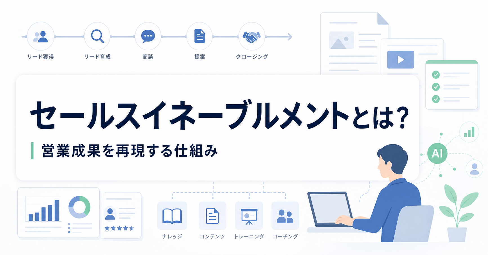
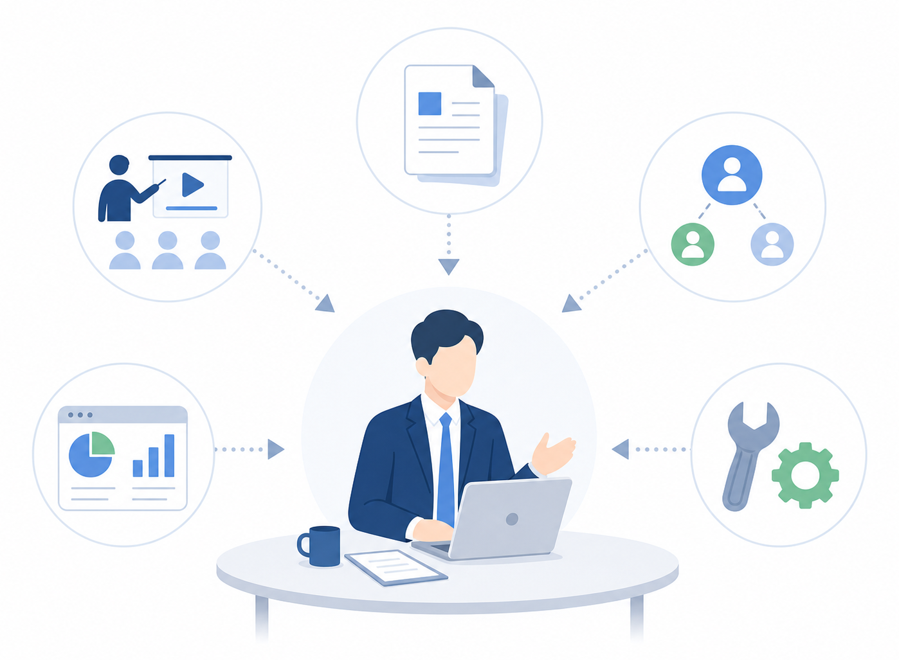
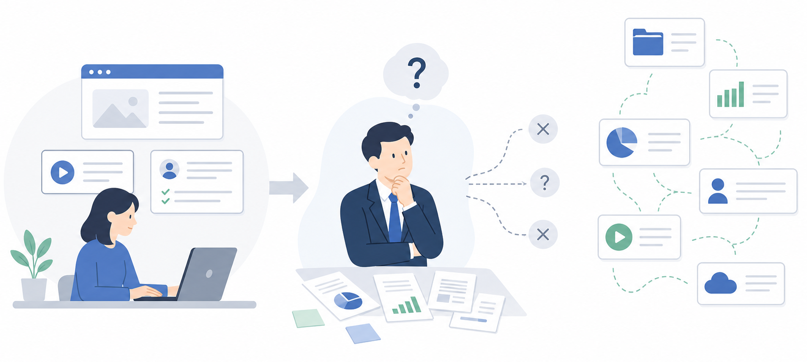
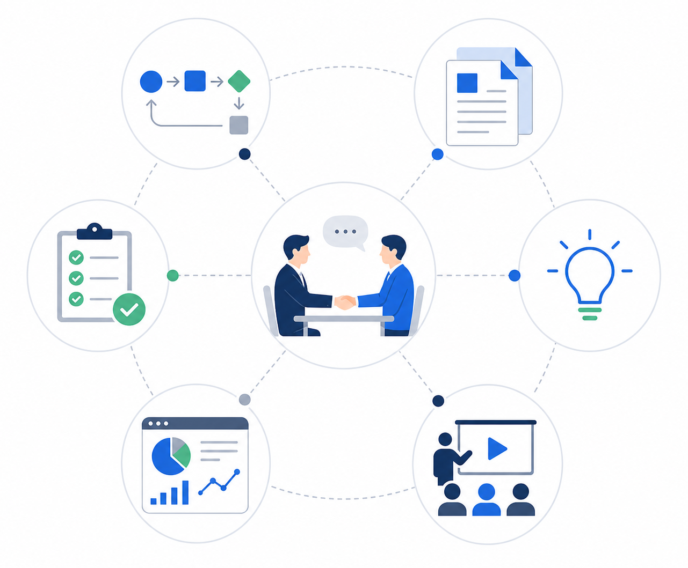
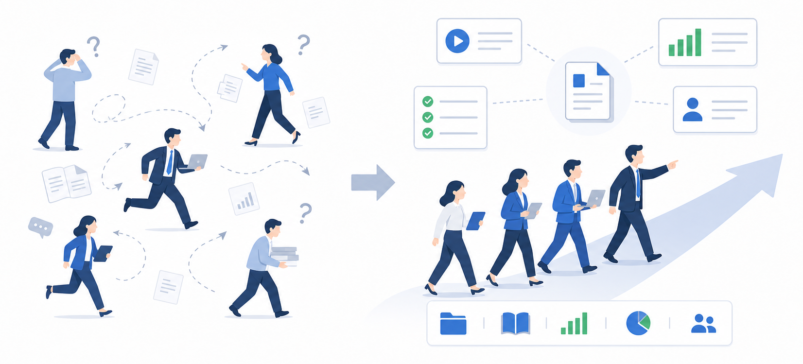
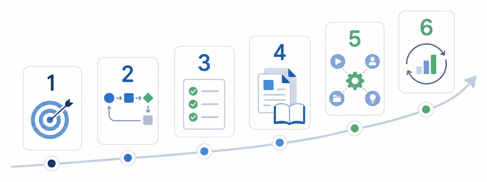
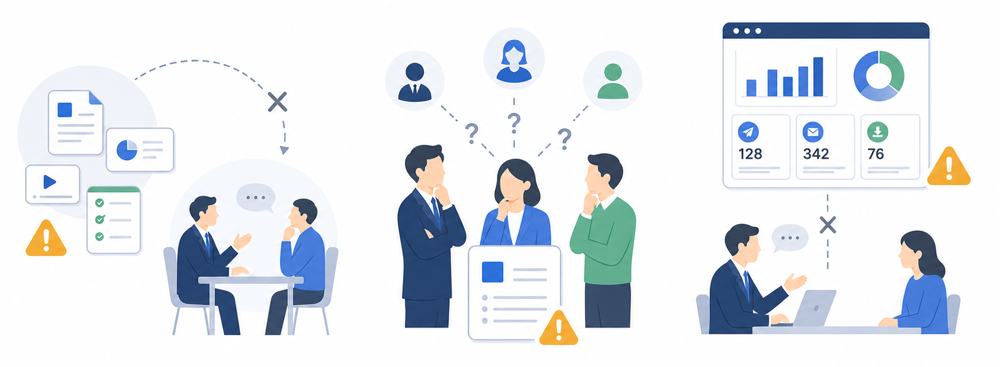
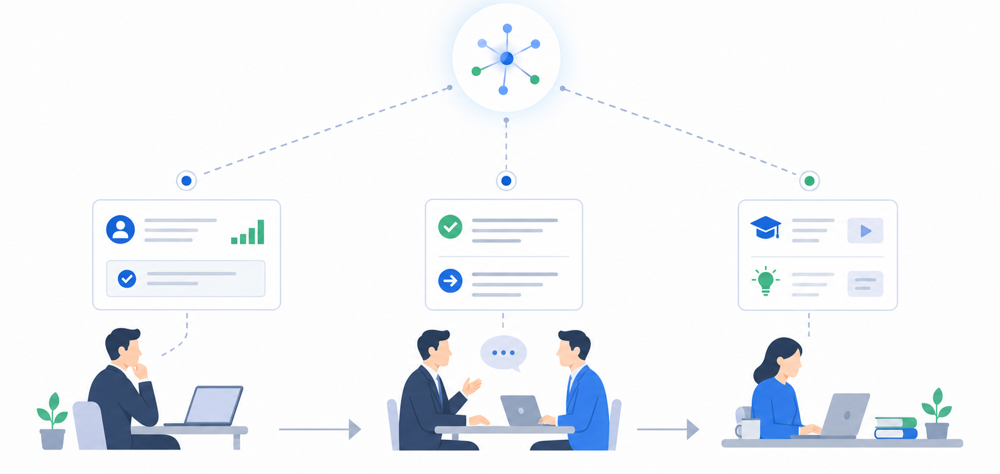

セールスイネーブルメントとは？意味や効果、導入手順、AI活用までわかりやすく解説

みなさんこんにちは、Valorize AIの斎藤です。
営業組織を強くしたいと思ったとき、多くの会社では、新人育成、営業資料の整備、商談ノウハウの共有、SFAやCRMの活用など、さまざまな課題が見えてきます。
ただ、それぞれを個別に進めるだけでは、営業成果はなかなか安定しません。研修を増やしても、商談で使われなければ意味がありません。資料を作っても、どの場面で使うべきかが分からなければ現場には定着しません。データを蓄積しても、次の営業判断に使われなければ成果にはつながりません。
セールスイネーブルメントとは、こうした育成・資料・ナレッジ・データ・ツールを、営業担当者が成果を出しやすい形に整える取り組みです。
この記事では、セールスイネーブルメントの意味、注目される背景、具体的な施策、導入手順、導入時の注意点、AI活用までを整理します。
セールスイネーブルメントとは

セールスイネーブルメントとは、営業担当者が成果を出しやすくするために、育成・資料・ナレッジ・データ・ツールを整える取り組みです。
営業担当者は、商談の中で多くの判断をしています。初回商談で何を聞くのか。提案前にどの情報を確認するのか。どの資料を、どの顧客に、どのタイミングで使うのか。失注しそうな商談では、どの兆候を確認し、誰が支援するのか。
これらを担当者ごとの経験と勘だけに任せると、成果はばらつきます。セールスイネーブルメントでは、うまくいっている営業活動を見える化し、他の担当者も同じ型で商談を進められるようにします。
セールスイネーブルメントが注目される背景

セールスイネーブルメントが必要とされる背景は、大きく3つあります。購買行動の変化、営業活動の属人化、情報・ツールの分断です。
1つ目は、購買行動の変化です。以前は営業担当者から情報を得る場面が多かった一方で、現在は顧客がWebサイト、比較記事、導入事例、口コミ、資料請求などを通じて、商談前に自分で情報を集めるようになっています。そのため営業担当者に求められるのは、商品説明だけではありません。顧客の状況を理解し、課題を整理し、社内の意思決定を進めやすくする支援です。
2つ目は、営業活動の属人化です。成果を出している担当者が、商談前に何を準備し、商談中にどの質問をし、提案時にどの資料を使っているのかが共有されていないと、同じ商品を扱っていても商談品質に差が出ます。新人が育ちにくい、マネージャーが同じ指摘を繰り返す、といった問題もここから起きます。
3つ目は、情報・ツールの分断です。営業に関わる情報が増えているのに、現場で使える形になっていない状態です。SFA（営業支援システム）、CRM（顧客管理）、MA（マーケティングオートメーション）、商談録画、名刺管理、メール配信、コンテンツ管理など、使える情報は多くなりました。一方で、情報が散らばると、営業担当者は何を確認すればよいのか分からなくなります。
だからこそ、営業プロセス、ナレッジ、コンテンツ、データをつなぎ、商談前に確認する情報、商談中に使う資料、商談後に残す記録として整理する必要があります。これが、セールスイネーブルメントが注目される大きな理由です。
セールスイネーブルメントの主な取り組み内容

セールスイネーブルメントで扱う領域は広いですが、実務では6つに分けると考えやすくなります。
営業プロセスの可視化と型化
リード獲得、初回接点、商談化、提案、クロージング、受注後フォローまで、営業活動の流れを可視化します。目的は、手順を細かく管理することではありません。どの段階で、どの情報が不足すると商談が止まるのかを見つけることです。
営業プロセスが見えると、担当者ごとの判断の違いも見えてきます。そこから、初回商談で確認する項目、提案前に整理する情報、失注リスクの見方を型にしていきます。
営業コンテンツの整備
提案資料、サービス資料、導入事例、料金説明、競合比較、FAQ、業界別資料などを整理します。単に保管場所を作るだけでは不十分です。その資料は初回商談で使うのか、提案前に送るのか、決裁者向けなのか、現場担当者向けなのか。使う場面まで決めておく必要があります。
資料は、作っただけでは営業判断に使われません。どの商談フェーズで、どの相手に、何を伝えるために使うのかが決まって初めて、営業現場で使われるコンテンツになります。
ナレッジ共有
トップセールスの商談ノウハウ、よくある質問、失注理由、顧客の反応、業界別の刺さる論点を、次の商談で使える形に整理します。
たとえば、「この業界ではこの課題が出やすい」「この質問が出たら、決裁者の不安が残っている可能性が高い」のように、営業担当者が判断に使える言葉で残します。
教育・トレーニング
新人向けのオンボーディング、商材理解、ロールプレイング、商談レビュー、マネージャーによるコーチングを設計します。研修を受けたかどうかではなく、商談で何ができるようになったかを確認します。
研修だけで育成を完結させようとすると、商談現場で使われない知識が増えます。商談レビューやロールプレイングと接続して、学んだ内容を実際の営業判断に変える必要があります。
データ活用
商談履歴、顧客情報、活動履歴、受注率、失注理由、フェーズ遷移を確認しながら、営業活動の改善点を把握します。入力すること自体が目的になると、現場には負担だけが残ります。
重要なのは、入力した情報が次の提案やマネジメントに使われているかです。データは蓄積するためではなく、判断を揃えるために使います。
効果測定
資料を作った、研修を実施した、ツールを導入した。それだけでは、セールスイネーブルメントが機能しているとは言えません。
商談化率、受注率、営業サイクル、新人の立ち上がり期間、資料の利用状況などを確認しながら、施策が営業成果に近づいているかを判断します。測定する数字は、活動量ではなく、営業判断や商談品質の変化を示す指標にします。
セールスイネーブルメントの効果・メリット

セールスイネーブルメントの主なメリットは、営業品質の平準化、新人育成の短縮、営業生産性の向上です。
営業品質の平準化とは、担当者ごとにばらばらだった商談の進め方を、一定の型に近づけることです。成果を出している担当者の考え方、商談の進め方、資料の使い方を整理すれば、他の担当者も同じ型で商談を進められます。
新人育成の短縮とは、新人や異動者が学ぶ順番を明確にすることです。何を学び、どの資料を読み、どの商談を見て、どの順番で実践すればよいかが分かれば、育成を属人的なOJTだけに頼らなくて済みます。
営業生産性の向上とは、営業担当者が顧客と向き合う時間を増やすことです。資料を探す時間、過去事例を調べる時間、商談準備に必要な情報を集める時間を減らせれば、営業担当者は商談そのものに集中しやすくなります。
このほか、マネジメントもしやすくなります。商談プロセスや判断基準が揃っていれば、マネージャーは「なぜこの商談が進まないのか」「どこで支援すべきか」を判断しやすくなります。
営業とマーケティングの連携にも効果があります。営業が必要としている資料、顧客からよく出る質問、商談で刺さるテーマが共有されれば、マーケティング側も実際に使われるコンテンツを作りやすくなります。
セールスイネーブルメントの導入手順

セールスイネーブルメントは、最初から大きな制度として作り込む必要はありません。むしろ、最初に範囲を広げすぎると、資料整理やツール運用だけで疲弊します。
1. 目的の決定
新人の立ち上がり期間を短くしたいのか。受注率を上げたいのか。商談化率を改善したいのか。営業資料の活用を進めたいのか。KGIは最終的に実現したい成果、KPIはそこへ向かう途中の変化を見る指標です。目的に合わせて、追う指標を絞ります。
2. 営業プロセスの可視化
商談フェーズ、担当者の行動、使う資料、入力している情報を書き出します。リードが発生してから受注するまでに、どのステップがあるのか。どこで商談が止まりやすいのか。どの段階で情報が不足しやすいのか。まずは現状を整理します。
3. 営業の型の定義
初回商談で必ず確認する項目、提案前に整理する情報、失注リスクの見方、次回アクションの決め方などを決めます。ここが曖昧なままツールを入れると、入力項目だけが増え、現場にとって負担になります。
4. 資料・ナレッジ・研修の整備
営業プロセスごとに必要な資料を整理し、よくある質問や成功事例をまとめます。新人向けには学習順序を決め、既存メンバー向けには商談レビューやロールプレイングを設計します。営業責任者や営業企画だけでなく、マーケティングやカスタマーサクセスも関わると、現場で使える材料になりやすくなります。
5. ツール連携
SFAやCRM、MA、商談録画ツール、資料管理ツールを使う場合は、営業プロセスと紐づけて連携します。初回商談前に確認する情報、商談後に残す記録、提案前に参照する資料が一つの流れで確認できる状態を目指します。
新しいツールを増やす前に、既存データが営業判断に使える形で整理されているかを確認します。営業プロセスを整理しないままツール導入から始めると、多くの場合、入力負担だけが増えます。
6. 効果測定と改善
営業担当者が初回商談や提案前に資料を使っているか。研修後に商談の進め方が変わったか。新人の立ち上がりは早くなったか。受注率や商談期間に変化はあるか。こうした問いを持ちながら、営業の型やコンテンツを更新します。
導入時の注意点

セールスイネーブルメントを導入するときに注意したいのは、作ったものが現場で使われずに終わることです。特に、次の3点を外すと定着しにくくなります。
1. 商談の流れに組み込まれないと定着しない
最も注意したいのは、作った資料や研修が商談の流れに組み込まれないことです。営業担当者が商談前に確認しない、商談中に使わない、商談後の振り返りにも使わないのであれば、それはセールスイネーブルメントではなく、単なる資料管理で終わります。
2. 部門ごとの役割が曖昧だと更新されない
次に注意したいのは、営業、マーケティング、カスタマーサクセスの役割が曖昧なまま進むことです。営業は現場の課題を出す。マーケティングは資料やコンテンツを整える。マネージャーは商談レビューに使う。この役割が決まっていないと、資料は古くなり、ナレッジは更新されず、現場にも定着しません。
3. 活動量だけを見ると成果が分からない
最後に注意したいのは、活動量だけを成果として扱ってしまうことです。研修を何回実施したか、資料を何本作ったか、ツールを導入したかだけでは不十分です。確認すべきなのは、営業担当者が実際に使っているか、商談品質が変わったか、受注率や商談期間に変化が出ているかです。
AI時代のセールスイネーブルメント

AI時代のセールスイネーブルメントでは、営業担当者が商談の流れの中で、必要な情報や次の行動を受け取れる状態を作ることが重要になります。
Gartnerは2026年4月の発表で、2029年までにAI駆動セールスイネーブルメントを持つ営業組織は、従来型のイネーブルメントに比べて営業ステージの進行速度が40%速くなると予測しています。
参考：Gartner「AI-Driven Sales Enablement」
この予測で重要なのは、AIそのものではありません。営業支援の中心が、資料を探す、研修を受ける、あとから振り返るという形から、商談前後の業務フローの中で判断を支援する形へ移っていることです。
Gartnerは同記事で、営業リーダーが取り組むべきこととして、次の3点を挙げています。
- 静的な資料や研修にとどまらず、業務フローの中でデータに基づく支援を行うこと
- 営業、マーケティング、サービスを横断してイネーブルメントを整えること
- AIと自動化を活用し、継続的な変革の中でもパフォーマンスを拡張すること
実務では、商談前に確認すべき顧客情報を提示する。商談中に過去事例や想定質問を参照できるようにする。商談後に議事録、次回アクション、マネージャーの確認ポイントを整理する。こうした支援を、営業担当者が普段使うCRMやSFA、商談記録、営業資料とつなげていくことが必要です。
AI時代のセールスイネーブルメントで整えるべきなのは、AIツールそのものではなく、AIが参照できる営業データ、現場で使えるナレッジ、そして人が最終判断するための基準です。営業活動のどこで判断が止まりやすいのかを整理し、その場面に合わせてAIを組み込むことで、セールスイネーブルメントはより実行に近い仕組みになります。
まとめ
セールスイネーブルメントとは、営業判断を個人の経験から組織の資産へ変える取り組みです。
研修、営業資料、ナレッジ共有、データ分析、AI活用は、単独で考えても定着しません。商談前の準備、ヒアリング、提案、マネージャーの支援、受注後の振り返りの中で、営業担当者が判断に使える形へつなげる必要があります。
最初に取り組むべきなのは、自社の営業活動のどこが属人化しているかを整理することです。そこを整理しないままツールやAIを導入しても、現場で使われない仕組みになりやすくなります。
もし、セールスイネーブルメントの導入や、営業効率の向上に課題を感じている場合は、お気軽にご連絡ください。事前の棚卸から実装、AIの有効活用まで幅広く支援することが可能です。